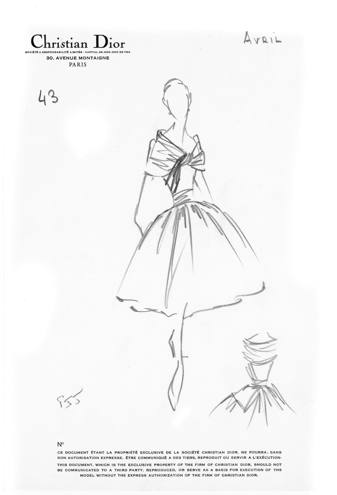
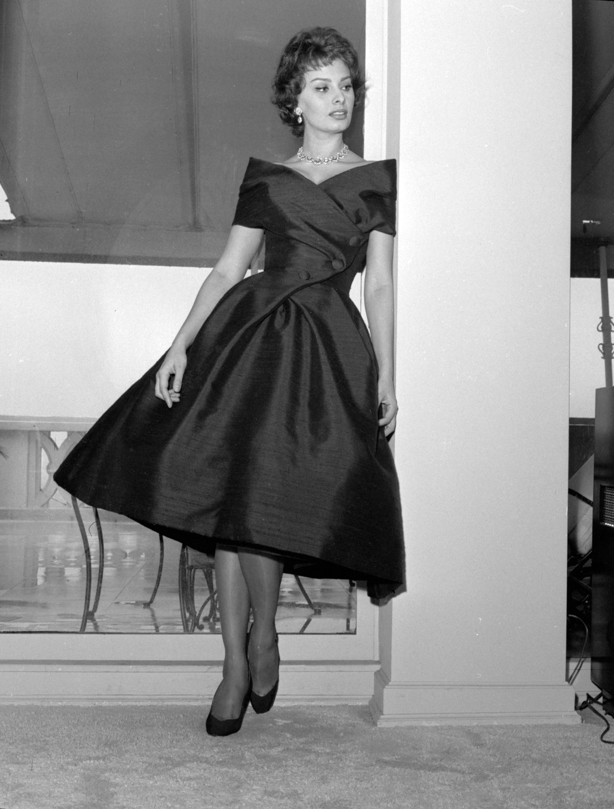
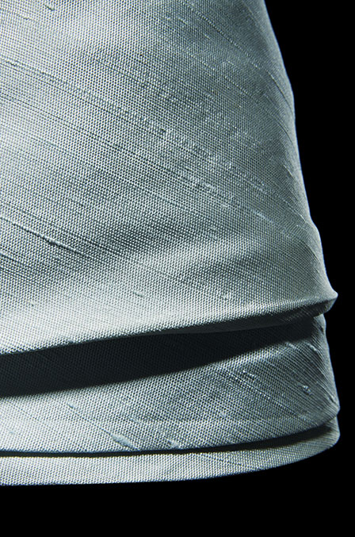

Press Sketch
Dior Héritage Collection, Paris



Chart
Caracas was originally made in black as recorded on the chart. The textile, a silk Aléoutienne (silk warp, dupion silk weft) was woven by Staron in Saint-Étienne.
Dior Héritage Collection, Paris

Press photograph, Caracas worn by Lucky.
© Association Willy Maywald / ADAGP, Paris / SODRAC, Montreal (2017)

Italian movie star Sophia Loren, wearing Christian Dior’s Caracas in silk Aléoutienne by Staron (Spring-Summer 1957)
Getty Images: CBS Photo Archive


Photos Laziz Hamani




Staron colourway samples for Aléoutienne pattern number #21.300 (silk warp and dupion weft).
© Collection musée d'Art et d'industrie de Saint-Étienne, France
© Clichés Hubert Genouilhac 2017